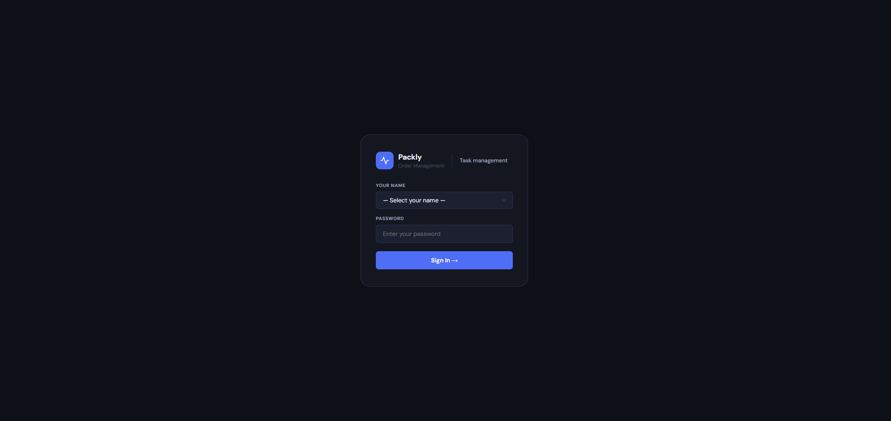
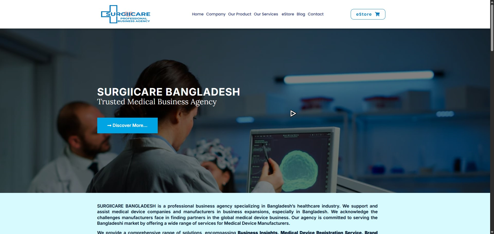

Internal ToolEmployee Management System
Apps Script + Google Sheets web app for a 20+ person order management team — task logging, shift tracking, manager dashboard.
View case studyBuilt for systems that can't afford downtime — IT operations and web development across customer support, internal tooling, and freelance builds.

IT and operations professional with hands-on experience across merchant operations, WordPress web development, and technical instruction.
I lead a customer care team at one of Bangladesh's fastest-moving logistics platforms, build the internal tools that keep that team running, and spend my evenings deep in networking labs — CCNA, Linux, the stuff that actually keeps infrastructure alive. Before that: three years teaching WordPress and web design to 100+ students, and a freelance run rebuilding a bloated medical eCommerce site into something fast and maintainable.
Students Taught
IT Institutes Instructed At
Tickets Resolved / Day
Best CC Team Lead, Monthly
Experience, education, and the skills built across both — from order-management support to teaching web design.
Packly, Dhanmondi, Dhaka
Surgiicare BD
LifeSkills IT Institute
100 Miles IT Institute
Manarat International University
Ahsanullah Institute of Technical and Vocational Education and Training
CGPA 3.15 / 4.00
Kaundia Shahid Smrity High School
GPA 3.85 / 5.00
Network Security Professional Program (CCNA, Network Security, AWS, Linux, Data Center) — DIU IT Academy · CCNA self-study — Jeremy's IT Lab + Packet Tracer
Internal tools and client builds — shipped, in active use, and documented below.

Internal ToolApps Script + Google Sheets web app for a 20+ person order management team — task logging, shift tracking, manager dashboard.
View case study
WooCommerceMedical business agency site + WooCommerce eStore — rebuilt from a bloated 100+ developer codebase into a lean, fast, branded build.
View case studyWhat I can pick up for you — from IT support to teaching the next person how it works.
Troubleshooting, diagnostics, and infrastructure basics — grounded in hands-on CCNA & Linux study.
WordPress & WooCommerce builds, Elementor customization, and performance audits that actually cut load time.
Google Apps Script tools that replace manual sheets and group chats with a real dashboard.
Technical training for beginners — web design, WordPress, and IT fundamentals, paced for real learners.
Tech-focused video & written content — breaking down tools, gear, and IT concepts for a general audience.
Team lead experience in high-volume support — SLA tracking, escalation handling, cross-team coordination.
Got a project, a role, or just want to talk networking and tooling? Reach out below.
Kaundia, Mirpur-1, Dhaka, Bangladesh
tazin.nafisiqbal@gmail.com
+880 1996-577199